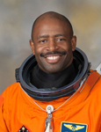

Lyndon B. Johnson Space Center
Houston, Texas 77058
|
National Aeronautics and Space Administration Lyndon B. Johnson Space Center Houston, Texas 77058 |
 |
Biographical Data |
||
Leland D. Melvin
Associate Administrator for Education
NASA HEADQUARTERS (FORMER)
PERSONAL DATA: Born February 15, 1964 in Lynchburg, Virginia. Unmarried. Recreational interests include photography, piano, reading, music, cycling, tennis, and snowboarding. Loves walking his dogs, Jake and Scout. Chosen by the Detroit Lions in the 11th round of the 1986 NFL college draft. Also participated in the Toronto Argonauts and Dallas Cowboys football training camps. His parents Deems and Grace Melvin, reside in Lynchburg, Virginia.
EDUCATION: Graduated from Heritage High School, Lynchburg, Virginia, in 1982; received a Bachelor of Science Degree in chemistry from the University of Richmond, Richmond, Virginia in 1986; and a Master of Science Degree in Materials Science Engineering from the University of Virginia in 1991.
ORGANIZATIONS: National Technical Association (Hampton Roads Chapter Secretary 1993), American Chemical Society, The Society for Experimental Mechanics.
SPECIAL HONORS/AWARDS: Invention Disclosure Award for Lead Insensitive Fiber Optic Phase Locked Loop Sensor, NASA Outstanding Performance Awards (8), NASA Superior Accomplishment Award (2), Key to the City of Lynchburg, Virginia, NCAA Division I Academic All American, University of Richmond Athletic Hall of Fame Inductee.
EXPERIENCE: Melvin began working in the Fiber Optic Sensors group of the Nondestructive Evaluation Sciences Branch at NASA Langley Research Center in 1989 where he conducted research in the area of physical measurements for the development of advanced instrumentation for Nondestructive Evaluation (NDE). His responsibilities included using optical fiber sensors to measure strain, temperature, and chemical damage in both composite and metallic structures. Additional projects included developing optical interferometric techniques for quantitative determination of damage in aerospace structures and materials. In 1994, Melvin was selected to lead the Vehicle Health Monitoring (VHM) team for the cooperative Lockheed/NASA X-33 Reuseable Launch Vehicle (RLV) program. The team developed distributed fiber optic strain, temperature and hydrogen sensors for the reduction of vehicle operational costs and to monitor composite liquid oxygen tank and cryogenic insulation performance. In 1996, Melvin codesigned and monitored construction of an optical NDE facility capable of producing in-line fiber optic Bragg grating strain sensors at rates in excess of 1000 per hour. This facility provides a means for performing advanced sensor and laser research for development of aerospace and civil health monitoring systems.
NASA EXPERIENCE: Selected by NASA JSC in June 1998, Mr. Melvin reported for training in August 1998. Astronaut Candidate Training included orientation briefings and tours, numerous scientific and technical briefings, intensive instruction in Shuttle and International Space Station systems, physiological training and ground school to prepare for T-38 flight training, as well as learning water and wilderness survival techniques. Mr. Melvin has served the Astronaut Office Space Station Operations Branch, the Education Department at NASA Headquarters, Washington, D.C, and the Robotics Branch of the Astronaut Office. As co-manager of NASA's Educator Astronaut Program, Leland Melvin traveled across the country, engaging thousands of students and teachers in the excitement of space exploration, and inspiring them to pursue careers in science, technology, engineering and mathematics. A veteran of two space flights, STS-122 in 2008, and STS-129 in 2009, Leland Melvin has logged over 565 hours in space.
In October 2010, Melvin was named as associate administrator for the Office of Education. As associate administrator, Melvin was responsible for the development and implementation of NASA’s education programs that inspire interest in science and technology and raise public awareness about NASA goals and missions. He retired from NASA in February 2014.
SPACE FLIGHT EXPERIENCE: STS-122 Atlantis (February 7 to February 20, 2008) was the 24th shuttle mission to visit the International Space Station. Mission highlight was the delivery and installation of the European Space Agency’s Columbus Laboratory. It took three spacewalks by crew members to prepare the Columbus Laboratory for its scientific work, and to replace an expended nitrogen tank on the Station’s P-1 Truss. STS-122 was also a crew replacement mission, delivering Expedition-16 Flight Engineer, ESA Astronaut Léopold Eyharts, and returning home with Expedition-16 Flight Engineer, NASA Astronaut Daniel Tani. The STS-122 mission was accomplished in 12 days, 18 hours, 21 minutes and 40 seconds, and traveled 5,296,832 statute miles in 203 Earth orbits.
STS-129 (November 16 to November 29, 2009) was the 31st shuttle flight to the International Space Station. During the mission, the crew delivered two Express Logistics Carriers (ELC racks) to the International Space Station, about 30,000 pounds of replacement parts for systems that provide power to the station, keep it from overheating, and maintain proper orientation in space. The mission also featured three spacewalks. The STS-129 mission was completed in 10 days, 19 hours, 16 minutes and 13 seconds, traveling 4.5 million miles in 171 orbits, and returned to Earth bringing back with them NASA Astronaut, Nicole Stott, following her tour of duty aboard the space station.
MARCH 2014